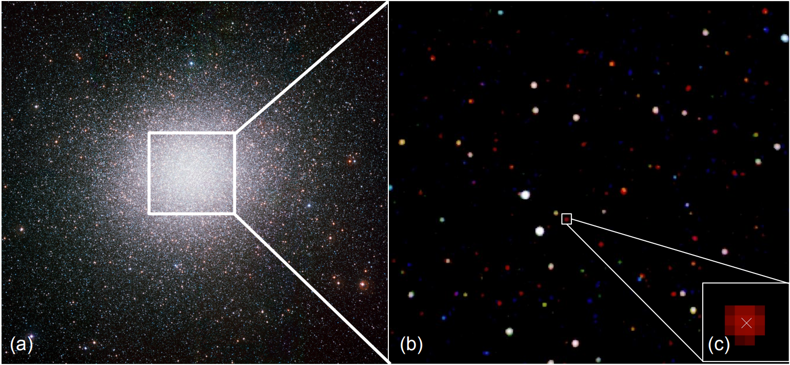
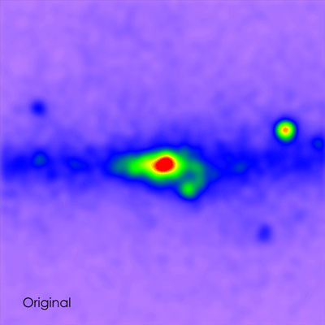

Millisecond pulsars as anchors
MSPs provide a clean observational handle on neutron-star evolution. I use X-ray data to identify counterparts, compare cluster populations, and connect individual sources to their broader formation channels.
My research centers on X-ray observations of neutron stars and related systems, especially millisecond pulsars in globular clusters. I am drawn to problems where careful source identification, population context, and multiwavelength evidence all have to work together.
MSPs provide a clean observational handle on neutron-star evolution. I use X-ray data to identify counterparts, compare cluster populations, and connect individual sources to their broader formation channels.
The dense stellar cores of globular clusters efficiently create binaries and compact remnants, making them ideal environments for testing how interactions shape pulsar populations.
Beyond classic MSP work, I am interested in the Galactic Center excess, magnetars, and long-period transients, especially where compact-object demographics may help resolve open questions.
One recurring theme in my work is the challenge of extracting compact-object physics from crowded stellar fields without losing the population context that makes those environments so valuable.

Millisecond pulsars are fast-spinning, highly magnetized neutron stars that were spun up through accretion in binary systems. In globular clusters, the high stellar density dramatically increases the chances of building and reshaping those binaries through close encounters.
That is what makes clusters such compelling places to work: they are not just convenient source collections, but environments that actively influence the compact-object populations inside them. My X-ray studies in systems such as M5, M13, and Omega Centauri are all motivated by this connection.
I am interested both in individual X-ray counterparts and in the larger census they build toward. Recent work spans systems including M5, M13, Omega Centauri, Terzan 5, and Cas A.
The GeV gamma-ray excess in the Galactic Center remains one of the most debated high-energy signatures in astrophysics. A central question is whether unresolved millisecond pulsars could account for the signal.
Constraining plausible MSP populations is therefore an important bridge between compact-object studies in globular clusters and source populations in the Galactic bulge.
Magnetars push neutron-star magnetic fields to the extreme. I am especially interested in the recently discovered ultra-long-period magnetars, also called long-period transients, and what they may reveal about neutron-star diversity.
These systems sit slightly outside my core MSP work, but they raise many of the same questions about compact-object evolution and observability.

The Galactic Center excess is a reminder that compact-object work often lives at the boundary between individual detections and population inference. That tension is part of what keeps the problem compelling.
My workflow typically combines Chandra data analysis, population-level interpretation, cross-mission context, and careful use of community data resources.